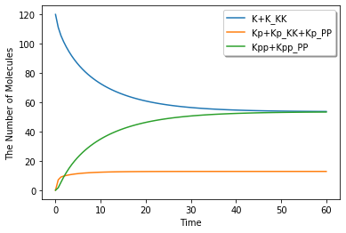
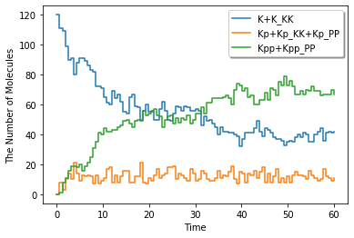

See also
This page was generated from examples/example03.ipynb.
Download the Jupyter Notebook for this section: example03.ipynb. View in nbviewer.
Dual Phosphorylation Cycle¶
[1]:
%matplotlib inline
from ecell4.prelude import *
[2]:
citation(20133748)
Takahashi K, Tanase-Nicola S, ten Wolde PR, Spatio-temporal correlations can drastically change the response of a MAPK pathway. Proceedings of the National Academy of Sciences of the United States of America, 6(107), 2473-8, 2010. 10.1073/pnas.0906885107. PubMed PMID: 20133748.
[3]:
@species_attributes
def attrgen(radius, D):
K | Kp | Kpp | KK | PP | K_KK | Kp_KK | Kpp_PP | Kp_PP | {"radius": radius, "D": D}
@reaction_rules
def rulegen(kon1, koff1, kcat1, kon2, koff2, kcat2):
(K + KK == K_KK | (kon1, koff1)
> Kp + KK | kcat1
== Kp_KK | (kon2, koff2)
> Kpp + KK | kcat2)
(Kpp + PP == Kpp_PP | (kon1, koff1)
> Kp + PP | kcat1
== Kp_PP | (kon2, koff2)
> K + PP | kcat2)
[4]:
radius, D = 0.0025, 1.0
ka1, kd1, kcat1 = 0.04483455086786913, 1.35, 1.5
ka2, kd2, kcat2 = 0.09299017957780264, 1.73, 15.0
m = NetworkModel()
m.add_species_attributes(attrgen(radius, D))
m.add_reaction_rules(rulegen(ka1, kd2, kcat1, ka2, kd2, kcat2))
[5]:
show(m)
K | {'D': 1.0, 'radius': 0.0025}
Kp | {'D': 1.0, 'radius': 0.0025}
Kpp | {'D': 1.0, 'radius': 0.0025}
KK | {'D': 1.0, 'radius': 0.0025}
PP | {'D': 1.0, 'radius': 0.0025}
K_KK | {'D': 1.0, 'radius': 0.0025}
Kp_KK | {'D': 1.0, 'radius': 0.0025}
Kpp_PP | {'D': 1.0, 'radius': 0.0025}
Kp_PP | {'D': 1.0, 'radius': 0.0025}
K + KK > K_KK | 0.04483455086786913
K_KK > K + KK | 1.73
K_KK > Kp + KK | 1.5
Kp + KK > Kp_KK | 0.09299017957780265
Kp_KK > Kp + KK | 1.73
Kp_KK > Kpp + KK | 15.0
Kpp + PP > Kpp_PP | 0.04483455086786913
Kpp_PP > Kpp + PP | 1.73
Kpp_PP > Kp + PP | 1.5
Kp + PP > Kp_PP | 0.09299017957780265
Kp_PP > Kp + PP | 1.73
Kp_PP > K + PP | 15.0
[6]:
session = Session(model=m, y0={"K": 120, "KK": 30, "PP": 30})
[7]:
ret = session.run(60.0)
[8]:
ret.plot(y=["K+K_KK", "Kp+Kp_KK+Kp_PP", "Kpp+Kpp_PP"], legend=True)

[9]:
ret = session.run(60.0, ndiv=100, solver='gillespie')
[10]:
ret.plot(y=["K+K_KK", "Kp+Kp_KK+Kp_PP", "Kpp+Kpp_PP"], legend=True, step=True)
